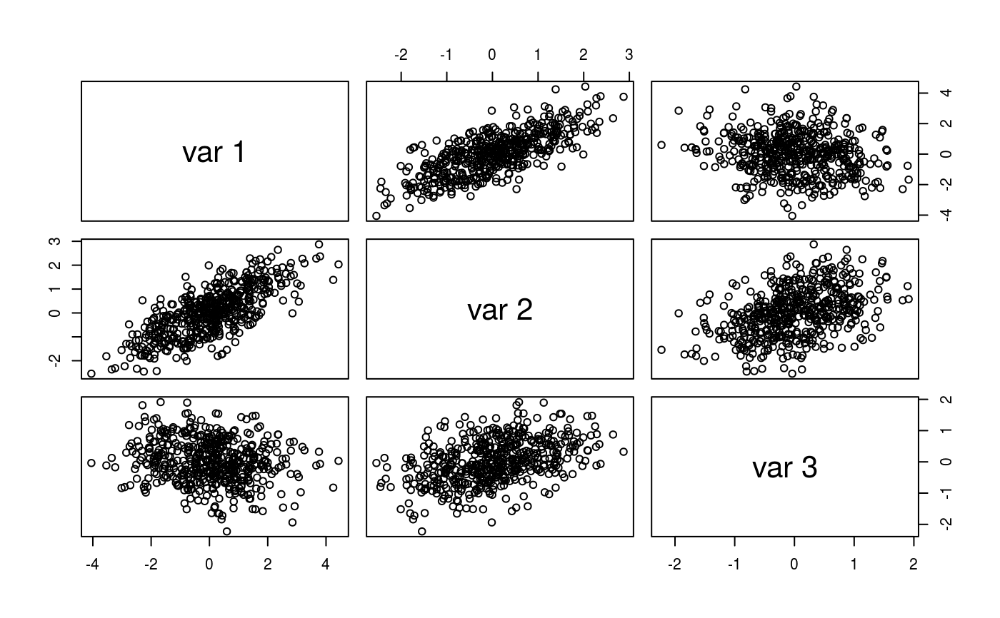
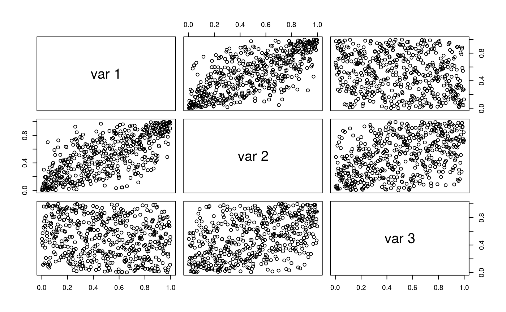

Compute the pseudo-observations for the given data matrix.
matrix of the same dimensions as x containing the
pseudo-observations.
Given \(n\) realizations
\(\bm{x}_i=(x_{i1},\dots,x_{id})^T\),
\(i\in\{1,\dots,n\}\) of a random vector \(\bm{X}\),
the pseudo-observations are defined via \(u_{ij}=r_{ij}/(n+1)\) for
\(i\in\{1,\dots,n\}\) and \(j\in\{1,\dots,d\}\), where \(r_{ij}\) denotes the rank of \(x_{ij}\) among all
\(x_{kj}\), \(k\in\{1,\dots,n\}\). The
pseudo-observations can thus also be computed by component-wise applying the
empirical distribution functions to the data and scaling the result by
\(n/(n+1)\). This asymptotically negligible scaling factor is used to
force the variates to fall inside the open unit hypercube, for example, to
avoid problems with density evaluation at the boundaries. Note that
pobs(, lower.tail=FALSE) simply returns 1-pobs().
This function is adapted from the copula() package.
## Simple definition of the function:
pobs
#> function (x, na.last = "keep", ties.method = eval(formals(rank)$ties.method),
#> lower.tail = TRUE)
#> {
#> ties.method <- match.arg(ties.method)
#> U <- if (!is.null(dim(x))) {
#> R <- apply(x, 2, rank, na.last = na.last, ties.method = ties.method)
#> apply(R, 2, function(x) x/(sum(!is.na(x)) + 1))
#> }
#> else {
#> rank(x, na.last = na.last, ties.method = ties.method)/(sum(!is.na(x)) +
#> 1)
#> }
#> if (inherits(x, "zoo"))
#> attributes(U) <- attributes(x)
#> if (lower.tail)
#> U
#> else 1 - U
#> }
#> <bytecode: 0x56475c896d48>
#> <environment: namespace:VineCopula>
## simulate data from a multivariate normal distribution
library(mvtnorm)
set.seed(123)
Sigma <- matrix(c(2, 1, -0.2, 1, 1, 0.3, -0.2, 0.3, 0.5), 3, 3)
mu <- c(-3, 2, 1)
dat <- rmvnorm(500, sigma = Sigma)
pairs(dat) # plot observations

## compute pseudo-observations for copula inference
udat <- pobs(dat)
pairs(udat)

# estimate vine copula model
fit <- RVineStructureSelect(udat, familyset = c(1, 2))